myFootball
Football Highlight & Analysis
Introduction
myFootball
 Football is the world’s most popular sport, played by two teams of 11 players on a rectangular field with a goal at each end.
It lasts 90 minutes (2 halves of 45 minutes) with added time if needed. Matches happen in different formats: such as League Matches (e.g. Premier League, La Liga), Cup Matches (e.g. FA Cup, Champions League), International Matches (e.g. World Cup, friendlies).
Football highlights are short clips (usually 3–10 minutes) showing the most exciting or important moments from a match. They include: Goals, Key saves, Skill moves, Fouls/cards, Close chances.
Football analysis dives deeper into the match to understand why certain things happened. Can be tactical (formation, strategies), technical (player skills), or statistical.
Football is the world’s most popular sport, played by two teams of 11 players on a rectangular field with a goal at each end.
It lasts 90 minutes (2 halves of 45 minutes) with added time if needed. Matches happen in different formats: such as League Matches (e.g. Premier League, La Liga), Cup Matches (e.g. FA Cup, Champions League), International Matches (e.g. World Cup, friendlies).
Football highlights are short clips (usually 3–10 minutes) showing the most exciting or important moments from a match. They include: Goals, Key saves, Skill moves, Fouls/cards, Close chances.
Football analysis dives deeper into the match to understand why certain things happened. Can be tactical (formation, strategies), technical (player skills), or statistical.
Features
Some of the features that are covered by the myFootball are described below in steps.
Fixtures
Get fixtures easily
In this part of the project, We have add feature to display the upcoming fixtures. You can find detail fixture information about the upcoming matchs including match types, home team, away team, date and time of play. All you have to do is, visit the myFootball and see the upcoming matchs. Use next & previous buttons to navigate all upcoming matchs.
Highlight
Get Latest Highlight and match recaps
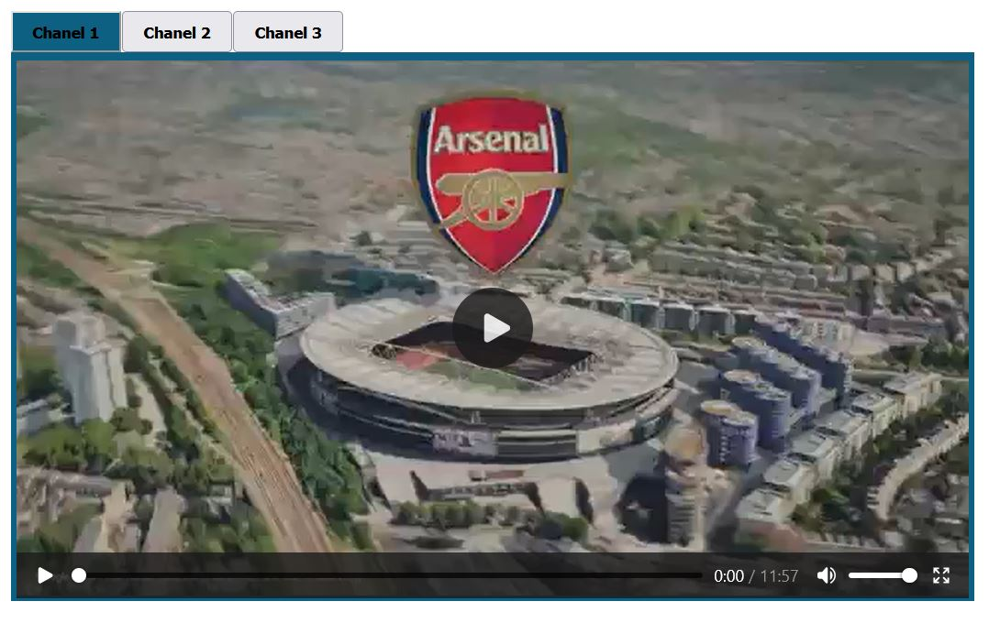One features of myFootball system is to provide you the latest match highlights. It displays the highlight of the selected match once the game is finalized. It provides three channels to watch the latest hightlights of each matchs. You can use your preffered channel by clicking the channels button. The selected match is displayed at the top.
Score
See match score
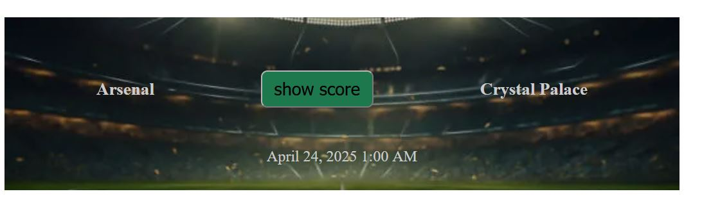The system also shows you the match result at any time. you can see the result before, after or any time of watching the highlights. Just click show score button to see the result of the match. It will show the goals scored by each team.
Easy Navigation
get related matchs easily
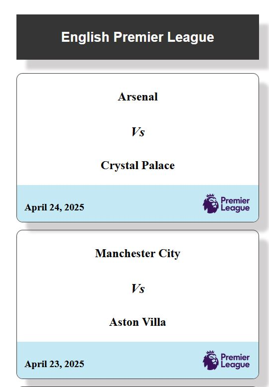The system is developed to includes all matchs happening all over the world. For this, we have categorized all matchs based on the match types like English Premier league, Italy Seria A, Champiouns League, World Cup etc. So when you select a given matchs, all matchs related to the selected matchs are filtered and displayed based on categoy, date of play etc. The title of the selected match is displayed at the left, top side of the middle & larger screen. The related matchs are displayed vertically in the left side of the middle & larger screen. for small screen, the title is located at the left side and related matches are position horizontally based on the date of play, the latest being displayed at the left. Highlights other than the selected one are sorted and displayed based on the date of play. Thus, for middle & larger screen, The latest highlight will be positioned at the top of the list.
Match Facts
get Match facts
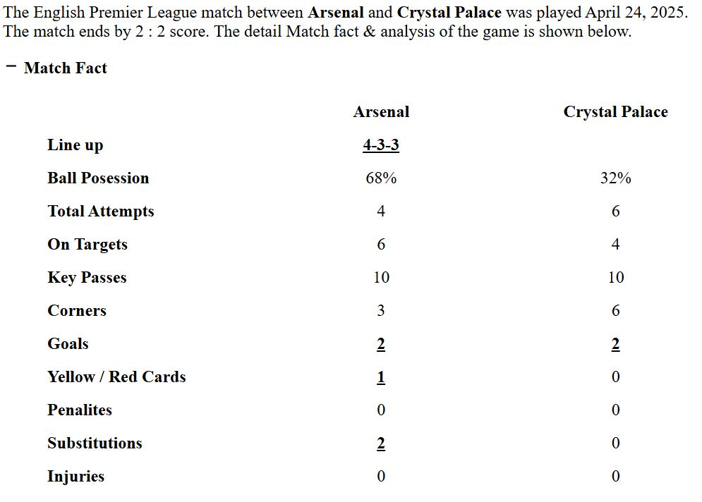 myFootball also includes match facts which typically refers to a notable piece of information or statistic related to a specific game or match. These facts are often used to summarize key moments, performance metrics, or unique occurrences in a match. Thus it displays information about goal score, penalities, formations, substitutions, key passes, assisted, on-target, corners, yellow and red cards etc.
Lineups
See lineups easily
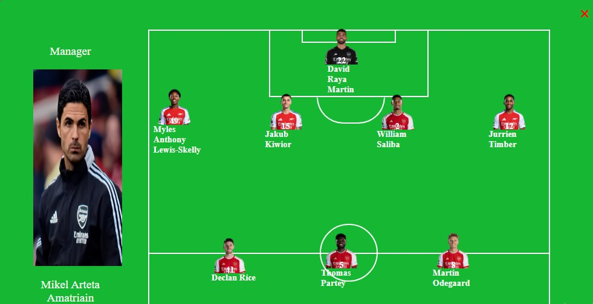 myFootball shows the math lineups of each team. From the lineups, you can see which players are selected start the match, be on the bench and over bench. The formation displays the player name, shirt No, photo and their positions on the field. You can click the formation hyperlink to see the detial lineups.
Match Analysis
get Match analysis
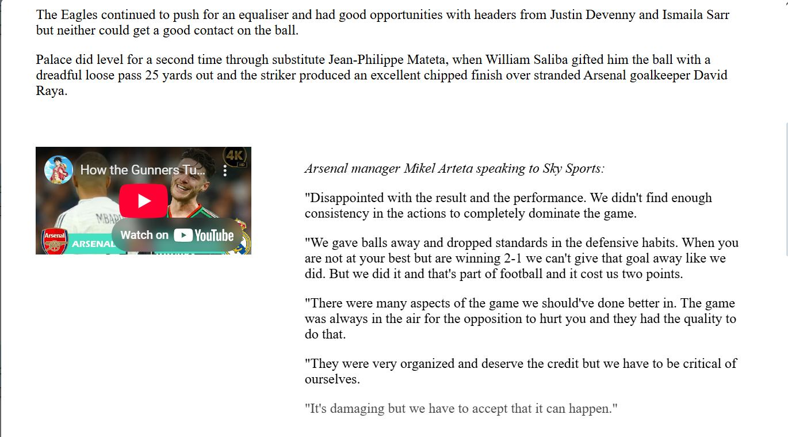 The very interesting part in the system is its ability to include match analysis. It sets the stage for a detailed breakdown of a game. It briefly outlines the key context—who played, the outcome, and any major talking points—before diving into tactics, player performances, or turning points. The match analysis can be supported by images, videos and any other attachments that can clearly explains the concepts to audience.
Formation Set up
make Formation easily by dragging & dropping
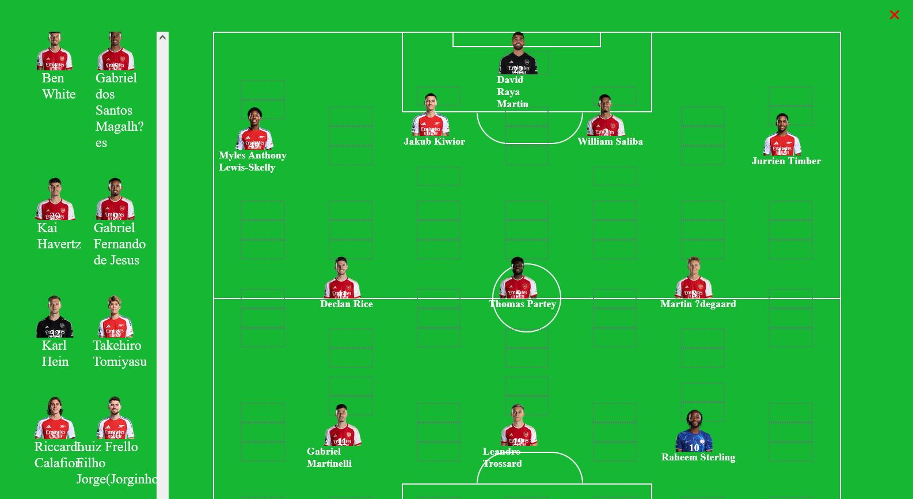In this part We have implemented dragging & dropping functionality to make teams formation. myFootball list out all Players of each team and based on the real information, you can draw the lineups easily. What you will do is just drag the player from players area and drop it into linups area. The system cleary shows the available spaces and the updated information on each drag & drop activities. Similarly you can identify and categorizes the subtitues of each team in subsitution area.
Highlight Set up
Prepare your highlights
myFootball has an interesting feature to help you prepare your highlight. It provides you a set up to easily grasp the link of the selected match. It first displays the avilable football matchs when its game is over. Only Latest matchs are dispalyed, the old and future games are filtered not to be displayed. Thus the select the match, then fill out the links to the highlights.
Goal Set up
Set goal & goal scorers
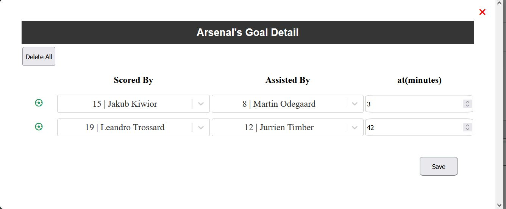 One of the information that going be displayed in match fact is goal Number and goal scorer.The system has a capability to set up the goals and goal scoreres of each match. In the match fact area, you can fill of the number of goals scored by each team. if you want to provide the goal scorer information, you click the button next to it open the goal scorer popup window. Simply select the goal scorer, the goal assister and time of score.
Substituion Set up
Set the substitution In/out
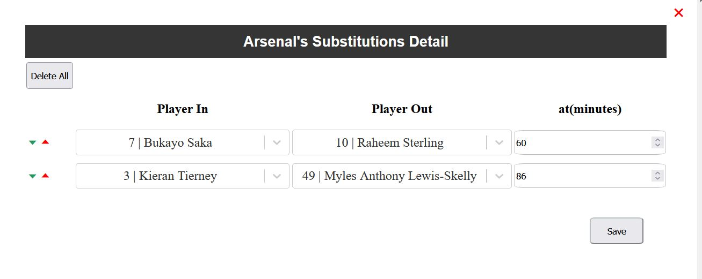 The next important information in match fact is substitution of each team. myFootball has an best mechanisim to set up the Substituions of each team. In match fact, set the number of players substitued during the game. To fill out the detail history, click the button next to it to open subsitution pop up window. Then select the players who joined the game and the players out from the game.
Match Analysis Set up
Set match Analysis smartly
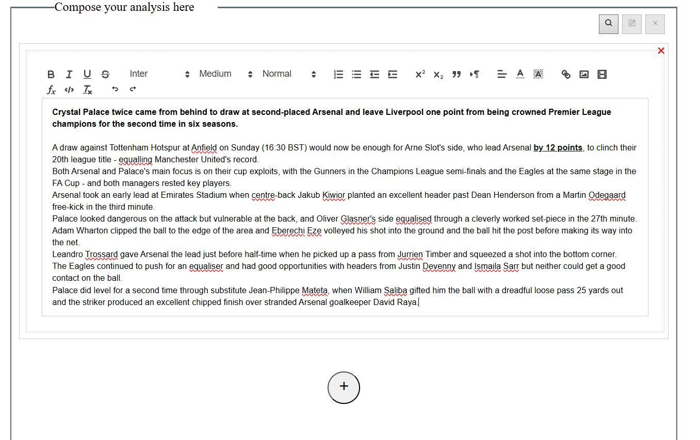 One of the most interesting features in this project is its ability to set up match analysis. You can easily compose your analysis using myFootball. You can organize your analysis by selecting the layout first and then start typing your thoughts. It has built in tools to style your paragraphs just like mircosoft word. You can also upload images and videos to make your thoughts more attractive and understandable.
Authentication
Secure Authentication
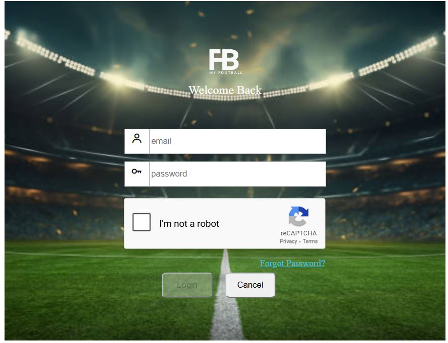 myFootball has a secure authentication method for staff members. Only authorized users are allowed to log in to the system using their credentials. These users are allowed to update football fields and to configure the system. The authentication is protected by google re-captcha and rate limit to add more layers of protection. The system incorporates modern json web token(JWT) standard to securly transmit information. Sensitive informations is also encrypted when it is send over the internet.
Dashboard
beautiful dashborad
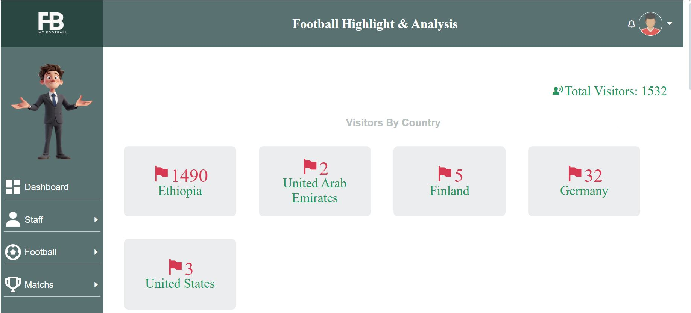 After you successfully log in to the system, you will land to beautif dashboard page. It displays relevant information to myFootball. It has profile and system menus at the top and left side of the page. Its content displays the site visitor information organized by the country, visitor date, number of visit etc. It is decorated by graphs, bar charts and othe visualization diagrams.
Responsivness & SEO
fully responsive and SEO freindly
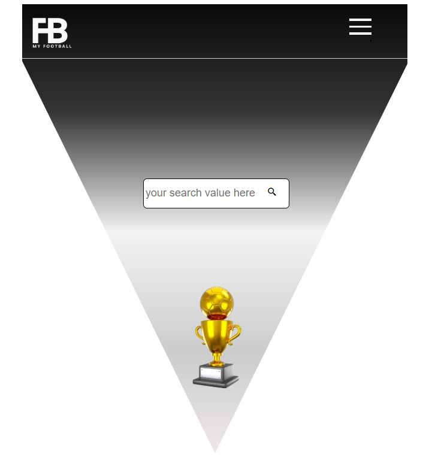 myFootball is designed to be fully responsive. You can view the system in small, medium and large screens. It can be accessed in mobile, tablet, labtop and desktop computers. All relevant information is displayed on each screen size. The system is also made to be SEO freindly. This improves its visibility in search engine results pages, leading to increased organic traffic and potential conversions. A web-designed, SEO-freindly systems is user-friendly, with clear navigation, fast loading times, and engaging content. This will enalbe the system to receive more visitors from a all over the world.
Tools & frameworks
For the development of this project, we have used Django backend and react front end frameworks. Specifically, the following tools/packages are used in this project
- Django: 5.0.6
- django-cors-headers: 4.4.0
- django-ratelimit: 4.1.0
- djangorestframework: 3.15.2
- djangorestframework-simplejwt: 5.3.1
- mysqlclient: 2.2.4
- PyJWT: 2.9.0
- PyMySQL: 1.1.1
- requests: 2.32.3
- cryptography: 43.0.0
- ag-grid-community: 32.0.0
- ag-grid-react: 32.0.0
- axios: 1.7.2
- browser-image-compression: 2.0.2
- generate-password-browser: 1.1.0
- js-cookie: 3.0.5
- jwt-decode: 4.0.0
- moment: 2.30.1
- react: 18.2.0
- react-dom: 18.2.0
- react-google-recaptcha: 3.1.0
- react-player: 2.15.1
- react-quill: 2.0.0
- react-redux: 9.1.2
- react-router-dom: 6.22.1
- react-select: 5.8.0
- react-slick: 0.30.2
- react-type-animation: 3.2.0
- recharts: 2.15.0
- slick-carousel: 1.8.1
- uuid: 9.0.1
- yup: 1.4.0
Future Task
In the future , these features will be added
- Match prediction using ML Models
- Video Advertisment